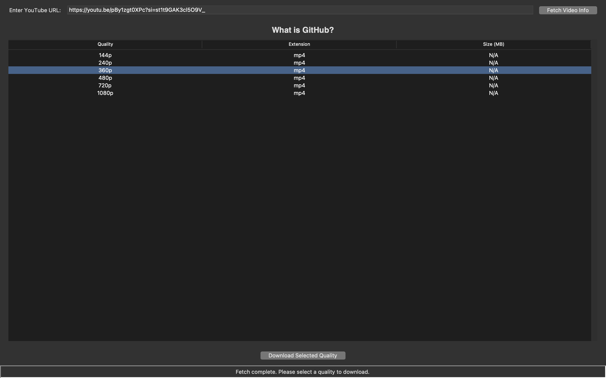
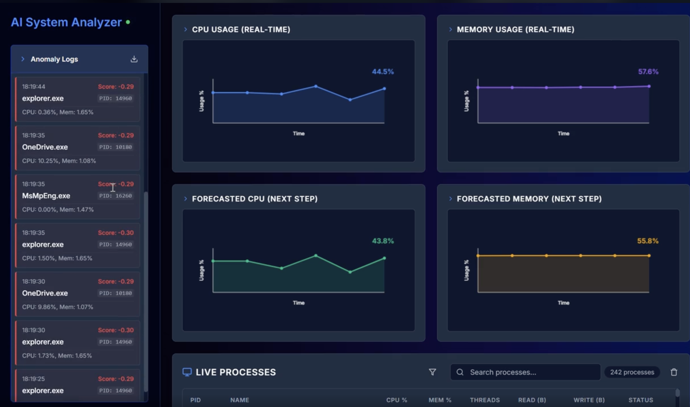
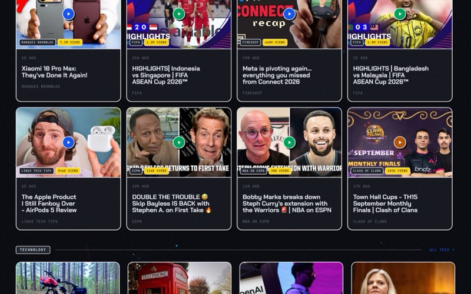
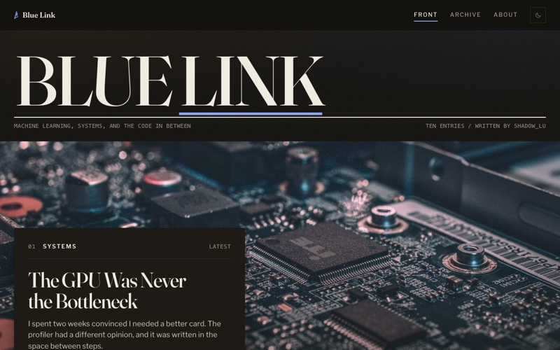

Hi, I'm Lukshya Supyal
|
Specialized in AI, Machine Learning, and Python Development
Specialized in AI, Machine Learning, and Python Development
I am a passionate developer with a strong focus on Artificial Intelligence and Python Development. I love building intelligent systems that solve real-world problems. With a deep understanding of Data Structures and Algorithms, I enjoy cracking complex coding challenges and optimizing solutions for efficiency.
Lovely Professional University — 2nd Year

Built a YouTube Video Downloader that allows users to download videos by providing a YouTube link and selecting the desired video quality. Implemented functionality to fetch available resolutions, handle audio/video streams, and download content efficiently to the local system.

An AI-driven system optimization tool engineered to detect and mitigate operating system anomalies. Leveraging a Random Forest algorithm, it analyzes process behavior in real-time to identify and assist in removing resource-draining tasks.

An editorial news reader for tech, AI, sport, games and lifestyle. A Node pipeline pulls RSS and YouTube feeds server-side, de-duplicates them and publishes static JSON, and GitHub Actions refreshes every section on a schedule.
A customer-support agent that answers only from your business documents using RAG and takes real actions: it looks up orders, checks live stock and hands off to a human. Runs as a one-line website widget and as a Telegram bot.
An LLM anime chatbot grounded in live AniList, Fandom and Wikipedia data, so it says so instead of making things up. Remembers each conversation and fails over between LLM providers automatically.
A friendly novels-expert chatbot grounded in Open Library and Wikipedia. Answers questions about any book, shows a cover card for the novel being discussed and recommends what to read next.
Proves a refactor changed nothing by running it. It records the real inputs your test suite produces, replays them against both versions and compares return values, exceptions, argument mutations and files written. Published on PyPI.
Values that know how sure they are. Uncertainty from a model stays attached to a number and propagates through arithmetic, so a comparison returns a probability and code can act only at a chosen confidence.
A mini Google for the terminal. Explains what a command does, finds the right command for a task described in plain words and checks what is installed. Fully offline, with no dependencies beyond Python.
A CLI that shows exactly how close you are to every GitHub profile achievement: merged PRs, co-authored PRs, stars and accepted answers, with the count still needed for the next tier.
Tracks high-end limited-edition products by scraping retailer pages, keeps a price history in CSV and sends an email alert when a deal appears.

My personal blog on machine learning, systems and the code in between. Plain HTML, one CSS file and about 130 lines of vanilla JavaScript: no framework, no build step and no tracking.
27 merged pull requests across 18 projects, from bug fixes to docs.
A GitHub App that backports merged pull requests to release branches.
Einstein said, 'Imagination is everything. It is the preview of life's coming attractions.' Let’s spark innovation and create something extraordinary together!